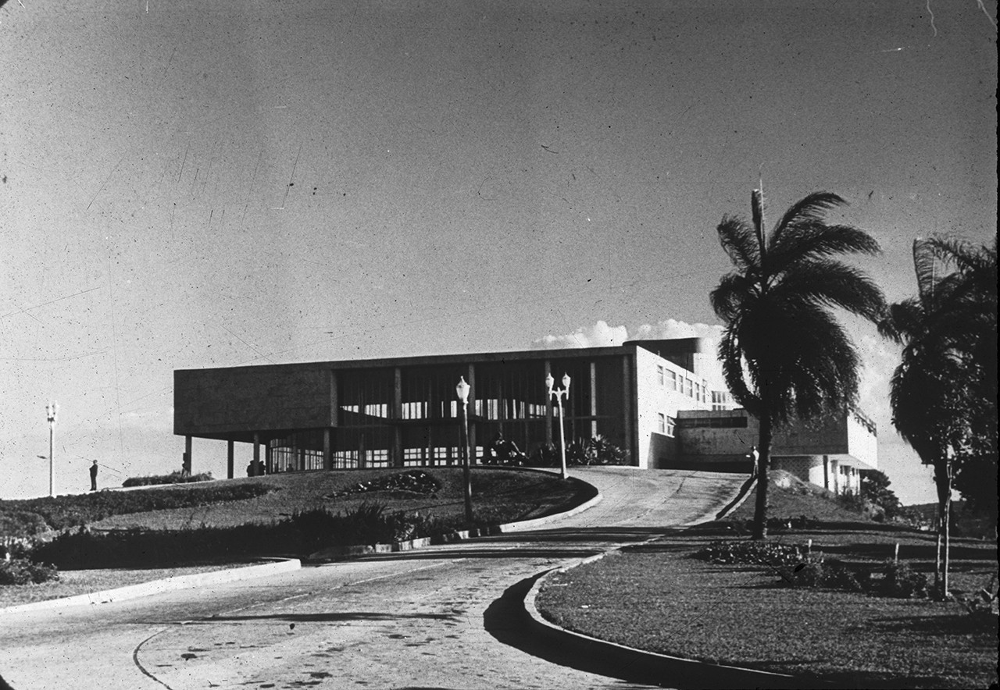

-
Cassino da Pampulha
Contextualização, projeto, ascensão e a queda.

-
Arraial de Santo Antônio da Pampulha
1848Os primeiros registros do Arraial de Santo Antônio da Pampulha datam de 1848, povoado ao norte do Arraial do Curral Del Rei, era composto principalmente por fazenda de colonos portugueses.
-
Aeroporto da Pampulha
1933O Aeroporto da Pampulha é inaugurado em 1933 para atender as necessidades dos correios e militares. A primeira linha aérea comercial começou a operar em 1936 e realizava voos entre Belo Horizonte e Rio de Janeiro. Nesse mesmo período iniciaram os primeiros investimentos públicos na região.

-
Barragem da Pampulha
1936 - 1938A Barragem da Pampulha é inaugurada em 1938, no governo do Prefeito Otacílio Negrão de Lima. A barragem tinha como principal objetivo fornecer água para a população local, além de oferecer recreação e esportes náuticos.

-
Juscelino Kubitscheck
1940 - 1942Juscelino Kubitscheck é eleito prefeito de Belo Horizonte e tem como meta modernizar a capital. A expansão é direcionada para o norte da cidade, com a implementação da Avenida Pampulha e construção do Projeto Arquitetônico da Pampulha.

-
Conjunto Arquitetônico da Pampulha
1943Em 1943 inaugurado oficialmente o Conjunto Arquitetônico da Pampulha, composto pelo Cassino, Iate Golfe Clube, Igreja de São Francisco de Assis, Casa do Baile, Residência Kubitscheck e um hotel que não chegou a ser construído.
O projeto idealizado por JK e criado por Oscar Niemeyer, Roberto Burle Marx, Cândido Portinari e Alfredo Ceschiatti, tinha como objetivo a criação de um centro de lazer e turismo para Belo Horizonte. -
Fim dos Jogos
1946Em 1946 é proibido todo tipo de jogo de azar em todo o Brasil, por determinação do presidente General Gaspar Dutra.
Para o presidente, os jogos eram incompatíveis com a "tradição moral, jurídica e religiosa" do povo brasileiro.
-
Museu de Arte da Pampulha - MAP
1957Em 1957 é inaugurado o Museu de Arte da Pampulha no local do antigo Cassino.
Seu acervo conta com obras dos artistas Guignard, Ianelli, Di Cavalcanti, Manabu Mabe, Franz Weissman, Ivan Serpa, Maurino, GTO, Tomie Othake, Benjamim, entre muitos outros.

-
Tombamento pela UNESCO
15 - 17 de Julho de 2016Em 2016, o Conjunto Arquitetônico da Pampulha é inscrito na Lista do Patrimônio Mundial, na categoria de Paisagem Cultural.
A decisão foi tomada no Conselho da ONU em Istambul, e foi aprovada por unânimidade.

-
Museu Hoje
Dias atuaisO Museu de Arte da Pampulha está fechado para visitações em seu interior há 4 anos para reformas. O projeto de lei para tal restauração foi aprovado apenas em maio desse ano.
Não há expectativas para a reabertura do interior do museu, porém, existem visitações guiadas em seu jardim e oficinas ao ar livre.